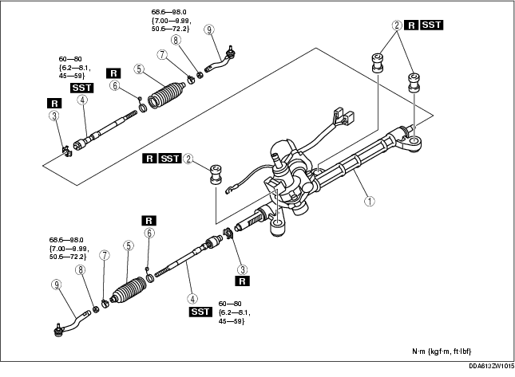
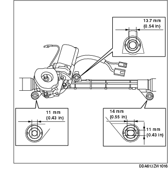
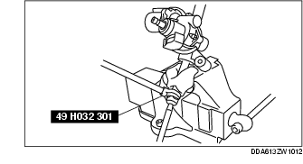

Steering gear and linkage assembly
- • Place copper plates, rag, or similar material in a vise, when securing the mounting bracket portion of the steering gear.
1. Assemble in the order indicated in the table.

|
1
|
Steering gear and linkage
|
|
2
|
Mounting rubber
|
|
3
|
Lock washer
|
|
4
|
Tie rod
|
|
5
|
Boot
|
|
6
|
Boot band
|
|
7
|
Boot clamp
|
|
8
|
Locknut
|
|
9
|
Tie-rod end
(See Tie-rod End Assembly Note.)
|
Mounting Rubber Assembly Note
1. Apply soapy water to the rubber part of the mounting rubber.
2. Temporarily install the mounting rubber to the steering gear in the direction shown in the figure.
- • If the mounting rubber is installed in an improper position and direction, it may cause improper installation when installing to the vehicle. Verify the position and direction before installing the mounting rubber.

3. Press the mounting rubber using the SSTs and a press until the end of the mounting rubber comes out completely from the gear housing.

4. Reverse the gear housing, then press the mounting rubber until the end of the mounting rubber comes out completely from the other side. At this time, verify that the mounting rubber and steel pipe are aligned.

Lock Washer, Tie Rod Assembly Note
1. Secure the arrow portions of the steering rack to the vise using a piece of clean rag.
- • If the steering rack is secured to the vise without using a piece of clean rag, it may damage the friction surface of the steering rack. Always use a piece of clean rag when securing the steering rack to the vise.
- • If the steering rack is secured to the vise in an incorrect position, the steering gear could fall from the vise when performing the procedure and be damaged. Always secure at the specified position when securing the steering rack to the vise.

2. Temporarily install the washers and tie rods to the steering gear.
3. Tighten the tie rod using the SST.
Tightening torque60-80 N·m {6.2-8.1 kgf·m, 45-59 ft·lbf}

4. Crimp the positions shown in the figure using a flathead screwdriver.

Tie-rod End Assembly Note
1. Align with the mark placed prior to removing the tie-rod ends and install to the tie rods.